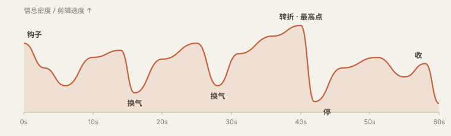

排片
前面讲的都是一个镜头、一刀、一个动效怎么做。这一章讲顺序：先放什么后放什么，一段话配什么样的画面，一条片子怎么开头和收尾。
注意力是一条往下掉的线
所有平台的后台都有一张图叫留存曲线：横轴是时间，纵轴是还在看的人的比例。它永远是从左上往右下掉的，区别只在掉得多快。短视频通常在前三秒掉得最狠，之后每一个让人觉得“没新东西了”的瞬间，线就往下跳一格。
排片这件事，说到底是在和这条线打交道。你有三个工具：开头用钩子把线顶住；中间靠不断给出新东西让它平着走；在它快要掉的地方安排转折或换气。
“新东西”不一定是新信息。画面换了一种形式、音乐变了、节奏变了、出现了一个问题，都算。一条片子从头到尾是同一个景别的人脸加字幕，哪怕内容很好，也会因为“看起来没在变”而被划走。
钩子：前三秒做什么
钩子hook是片子开头用来留住人的那一小段。它不是标题，不是自我介绍，也不是“大家好”。它要在一两句话、两三个镜头之内，让观众产生一个非看下去不可的理由。常用的有七种：
| 钩子 | 做法 | 例子 |
|---|---|---|
| 结果前置 | 把全片最精彩的画面或最终成果放到第一秒，然后倒回去讲 | 先放改造完的房间 2 秒，再“三个月前它是这样的” |
| 反常识 | 一句和直觉相反的断言 | “多修一条路，这个城市反而更堵了。” |
| 提问 | 问一个观众答不上来但想知道的问题 | “为什么电影都是 24 帧，而不是 25 或者 30？” |
| 冲突 | 直接从矛盾最尖锐的时刻开始 | “甲方看完第一版，只回了两个字。” |
| 数字 | 一个具体到让人意外的数 | “这条 60 秒的片子，剪了 47 刀。” |
| 视觉奇观 | 一个没见过的画面，不需要解释 | 微距、延时、航拍、一个巧妙的转场 |
| 点名 | 直接说出目标观众的处境 | “如果你每次让 AI 改片都只会说‘再调调’……” |
钩子的画面也要配得上。说“反常识”那句话的时候，屏幕上应该是大字、特写或者一个强画面，而不是一个慢慢淡入的标题动画。前三秒里每一帧都很贵。
几种现成的骨架
结构不需要发明。下面几种骨架覆盖了九成的片子，选一个往里填就行。告诉 AI 你用哪一种，它就知道段落怎么分。
| 骨架 | 顺序 | 适合 |
|---|---|---|
| 问题—答案 | 抛问题 → 常见的错误理解 → 真正的答案 → 一个例子 → 一句话收 | 知识讲解、科普 |
| 清单 | 钩子 → 第 1 条 → 第 2 条 → … → 最重要的一条放最后 | “五个技巧”“三个误区”这类 |
| 对比 | A 是这样 → B 是这样 → 为什么不同 → 你该选哪个 | 测评、方案比较、前后改造 |
| 步骤 | 成品预览 → 第一步 → 第二步 → … → 成品回放 | 教程、操作演示 |
| 痛点—方案 | 痛点（让人点头）→ 放大后果 → 方案出现 → 证明有效 → 行动 | 产品介绍、广告 |
| 故事 | 人物想要什么 → 遇到阻碍 → 尝试与失败 → 转机 → 结果与变化 | 个人经历、案例、品牌片 |
| 时间线 | 按时间先后一路讲下来，可以在开头预告结局 | Vlog、复盘、历史梳理 |
不管用哪种，有三个位置是固定要设计的：开头的钩子；中间偏后的一个转折，就是“但是”“没想到”“真正的原因是”出现的地方，全片的最高点通常在这；以及结尾。
结尾怎么收
结尾最常见的错误是没有结尾：话说完了，画面一黑。或者相反，放一长段“感谢观看、点赞关注”的片尾。几种稳妥的收法：
- 回扣开头。回到开头的那个问题或画面，这次带着答案。最容易给人“完整”的感觉。
- 一句话结论。全屏只留一行字，停一秒半，音乐同时落下最后一个音。
- 留一个动作。告诉观众现在可以做的一件具体小事。
- 戛然而止。在最高点直接结束。只有前面铺垫足够才成立，但成立的时候很有劲。
段落和换气
把全片分成若干小节，每节 10 到 25 秒，只讲一件事。节与节之间要让观众感觉到“换了一段”：可以是画面形式变了，可以是音乐变了，可以是一个半秒的停顿，也可以是一张只有小标题的过渡卡。
在一节内部，信息密度也不该是平的。一个好用的模型是“讲—证—停”：先用一句话讲出这一节的观点，然后给证据（截图、数据、演示），最后留一个短暂的空当让它沉下去。这个空当行内叫换气beat或“一拍”，往往只有半秒到一秒，可以是一个空镜、一个表情，或者干脆是画面停住不动。
没有换气的片子就是你说的“太赶”“太满”。很多人以为快节奏等于不留空，结果观众一句都没记住。真正节奏快的片子，是在密集之后停得很准。

什么内容，用什么形式
这是排片里最具体、也最有用的一部分。旁白里的每一句话，都属于某种“类型”：它是一个数字，还是一个对比，还是一个过程？每种类型都有几种被验证过的画面形式。新手的片子之所以像 PPT，是因为不管什么内容都用同一种形式：一行标题加几个要点。
下面这张表可以当菜单用。拿到文案后，一句一句地问“这句话是什么类型”，然后从右边挑。
| 这句话在说 | 可以用的画面形式 | 要点 |
|---|---|---|
| 一个数字 | 全屏大数字，滚动计数到位；或柱状图里只有这一根是亮的 | 数字要是全屏最大的东西，单位小一号。旁白念到它的时候它正好到位 |
| 两个东西的对比 | 左右分屏；同一位置前后切换；一条滑杆左右拉 | 两边的构图、大小、位置必须一致，只让“不同的那一点”不同 |
| 一个过程或步骤 | 步骤条逐格点亮；流程图沿着箭头依次出现；录屏加光标高亮 | 一次只亮一步，已完成的变灰，未到的不出现 |
| 若干并列的条目 | 清单逐条贴上；卡片依次排开；网格逐格填入 | 条目超过五个就分屏。每条出现时配同一个音效 |
| 一句引用或别人的话 | 引文卡加出处；原始截图（推文、论文、新闻）加高亮划线 | 尽量用原始截图，比重新打一遍字可信得多 |
| “这是真的” | 实拍、录屏、新闻原图、数据来源页 | 真实素材带着它自己的“粗糙”，这种粗糙就是可信度，不要美化掉 |
| 一个地点 | 地图从大范围推近到那个点；卫星图；街景 | 先给观众认识的大范围，再推进去 |
| 随时间的变化 | 折线从左画到右；时间轴上的节点依次亮起；同一画面的延时 | 线要“画”出来，而不是整条淡入 |
| 一个东西的构成 | 拆解图：整体散开成零件，各自标注；剖面 | 先给完整的样子，再拆 |
| 因果关系 | 一个元素的动作触发另一个元素的变化：推倒、点亮、连线 | 因和果要出现在同一屏里，并且真的“碰到” |
| 一个抽象概念 | 找一个日常的东西做比喻，把比喻画出来 | 画那个东西本身，不要用圆圈和箭头代替 |
| 一个产品功能 | 真实界面的录屏，推近到操作的位置，光标或手指做出动作 | 去掉无关的界面，只留这个功能所在的那一块 |
| 情绪、态度、观点 | 人脸的近景或特写；一个有氛围的空镜配音乐 | 这时候不要盖 B-roll，让人看到说话的人 |
| 全片最重要的一句话 | 全屏只有这一句，其他都清空；前面停半拍 | 全片只用一次 |
| 过渡、承上启下 | 空镜；小标题卡；画面内容不变但镜头缓慢移动 | 一秒左右就够，它的任务是让人喘口气 |
这张表的核心原则是：旁白说到什么，屏幕上就是什么；旁白里的动词，画面上真的发生。旁白说“下降了”，那条线就要往下走；说“被替代了”，旧的那个就要被新的盖住或挤走。画面如果只是“相关”，而不是“演出来”，观众就得一边听一边自己脑补，很快就累了。
一个例子
拿一小段文案来走一遍。原文：
去年这个团队只有三个人，做一条视频要两周。今年他们还是三个人，但一周能出五条。多出来的不是人手，是他们把剪辑交给了 AI，自己只负责说清楚要什么。
| 句子 | 类型 | 画面 | 时长 |
|---|---|---|---|
| 去年这个团队只有三个人，做一条视频要两周。 | 数字 + 时间 | 左侧三个人形图标；右侧一格日历，14 天逐格划掉，最后落出一个视频图标 | 4 秒 |
| 今年他们还是三个人，但一周能出五条。 | 对比 | 画面结构不变（这样才看得出是对比）。日历只划掉 7 天，落出五个视频图标，一个接一个弹出 | 3.5 秒 |
| 多出来的不是人手， | 否定 | 镜头推近到三个人形图标，一个加号出现在旁边，然后被划掉 | 1.5 秒 |
| 是他们把剪辑交给了 AI， | 因果 | 一把剪刀图标从人的手里滑到一个对话框里 | 2 秒 |
| 自己只负责说清楚要什么。 | 最重要的一句 | 清空画面。全屏大字“说清楚要什么”，停住 | 2.5 秒 |
五句话，五种不同的画面形式，而且前两句故意用了同一个版式来做对比。这就是“排”的意思。
时间的账
排片时最容易翻车的地方是时间算不过来：画面设计得很好，但旁白一句话三秒就念完了，画面里的东西根本来不及出完。下面几个数字帮你提前算账。
| 项目 | 经验值 |
|---|---|
| 中文口播语速 | 正常每秒 4 到 5 个字，快节奏短视频每秒 5 到 6 个字。一分钟大约 250 到 330 字 |
| 屏幕文字的阅读速度 | 观众每秒能读 6 到 8 个字。一行 12 个字至少停 2 秒，而且要算上它进场的时间 |
| 一个画面被“看懂” | 简单画面（一个主体）约 0.5 秒；带文字的信息画面 2 到 4 秒；复杂图表 5 秒以上，并且要有引导 |
| 一句旁白配几个画面 | 通常一句一个。长句可以拆成两三个，但每个不短于 1 秒 |
| 字幕 | 每行不超过 14 到 16 个字，最多两行。按语气断句，不要把一个词拆到两行 |
反过来也能用这些数字倒推文案：要做一条 60 秒的片子，文案就写 260 到 300 字，再多一定讲不完，除非你接受机关枪一样的语速。
导演表：把排片写下来
排片的结果是一张表，行内叫分镜表、镜头表，或者导演表。它是你和 AI 之间最重要的一份文件：在动手做任何画面之前，先把这张表对齐。
# 时间 旁白 类型 画面 运动与衔接 声音 作用 1 0:00–0:02 多修一条路，城市反而更堵了 反常识 航拍堵车画面，上面压大字 硬切进；字 0.3s 弹出 鼓点直接进 钩子 2 0:02–0:05 这不是段子，是数学 断言 字清空，留一行公式手写出现 笔迹 0.8s 写完 铅笔声 建立可信 3 0:05–0:11 1968 年，德国数学家…… 引用 论文首页截图，推近到标题 推近 0.6s 缓出 翻纸声 给出处 …
拿到表之后你要审的是：钩子够不够硬；每一镜的画面是在“演”旁白，还是只是“配”旁白；有没有连着好几镜长得一样；最高点在哪、前面有没有给它让路；总时长对不对。这五条都过了，再让它动手。
片例截图与片段仅用于学习与评述，版权归原作者与出品方所有，出处见片单与出处。